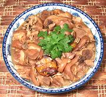

|
Pork Hocks with VinegarPhilippines - Paksiw na Pata | ||||
| Serves: Effort: Sched: DoAhead: |
3 main *** 2 hrs Yes |
A sort of sweet and sour stew with a wide range of textures. A fine dish for all who appreciate the unique characteristics of this choice cut. | |||
|
2 ---- 2 5 1/3 3 2/3 2 1/3 1 1/4 6 ar ---- 1/4 7 |
# --- cl oz c T t T t t --- c oz |
Pork Hocks (1) -- Pickle Garlic Banana Blossom (2) Vinegar (3) Soy Sauce Salt Sugar (4) Peppercorns Bay Leaf Oregano, dry Cloves Water -------- Oil Plantain (5) |
The skins are soft and gelatinous, the tendons firm and gelatinous, the meat firm and solid, the bones rock hard, and the plantains tender and sweet. Prep - (20 min)
|